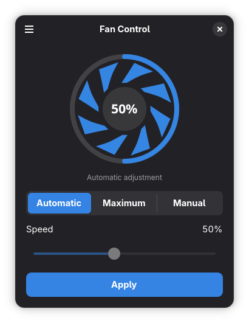
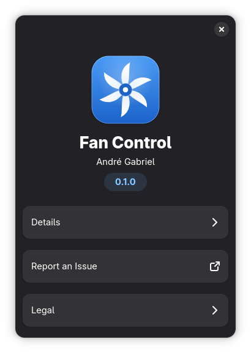

App nativo
Construído em GTK 4 e libadwaita. Segue o tema do sistema e os atalhos do GNOME.
GTK 4 / libadwaita
Um app nativo para definir a velocidade do ventilador. Automático, máximo ou manual, como você preferir.

Recursos
Construído em GTK 4 e libadwaita. Segue o tema do sistema e os atalhos do GNOME.
Mova o slider e clique em Aplicar. A velocidade muda sem passar pelo terminal.
Cerca de 2 MB, sem serviços em segundo plano e sem telemetria.

Três modos
O sistema ajusta a velocidade conforme a temperatura.
Coloca o ventilador em 100%.
Você escolhe a porcentagem no slider e o app mantém esse valor.
Disponível para as principais distribuições Linux.
flatpak install flathub io.github.andre0n.FanControl